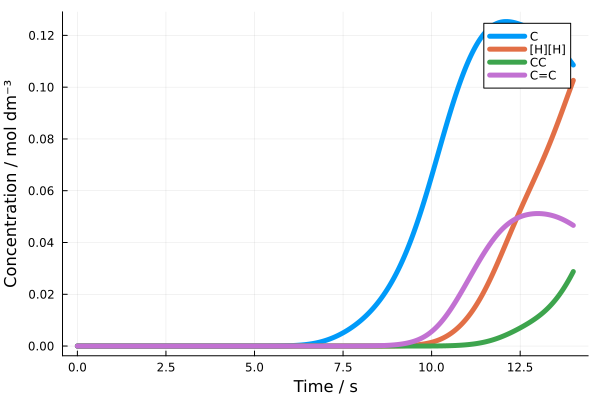

Results Analysis
Upon completion of a kinetic simulation run by solve_network (or through the end of a CRN exploration using explore_network, which also calls this function), Kinetica returns an ODESolveOutput object. This binds together the CRN that this simulation was run on (after modifications such as those described in Filtering CRNs and Removing Low-Rate Reactions), the parameters the simulation was run with, and the simulation's results. This data can be used for analysing the results of a kinetic simulation.
We will demonstrate this analysis using the results of the CRN we generated and simulated in Getting Started:
using Kinetica
res = load_output("../my_CRN_out/direct_network_final.bson")Analysing the CRN
The output CRN is stored across two data structures: a SpeciesData for holding information about the species within the CRN, and a RxData for holding information about the reactions between those species. These can be accessed through ODESolveOutput.sd and ODESolveOutput.rd respectively. For more information on these objects, see CRN Representation.
sd, rd = res.sd, res.rdBy default, Kinetica stores information about these species and reactions in a compact form to maintain efficiency when working with large CRNs. For example, reactions are stored as Vectors of integer species IDs. To inspect individual reactions, we can use the print_rxn function:
# Print the first reaction in the CRN.
print_rxn(sd, rd, 1)C --> [CH2] + [H][H]print_rxn is just a wrapper to print the string returned by format_rxn, which uses the reactants/products and stoichiometries in rd and the species SMILES in sd to generate a human-readable string describing a reaction. If you need to print more information alongside a reaction, consider something like println("$(format_rxn(sd, rd, rid)): $(extra_data[rid])").
Both print_rxn and format_rxn accept a keyword argument display_level, which also tags the requested reaction with the exploration level (see Iterative CRN Exploration) in which it was discovered.
The total number of reactions in a CRN is stored in RxData.nr, so printing all the reactions in a CRN is as simple as this loop:
for i in 1:rd.nr
print_rxn(sd, rd, i)
endC --> [CH2] + [H][H]
[CH2] + [H][H] --> [CH3] + [H]
[CH2] + [H][H] --> C
[CH3] + [H] --> [CH2] + [H][H]
C --> [CH3] + [H]
[CH3] + [H] --> C
[H][H] --> 2 [H]
2 [H] --> [H][H]
2 [CH2] --> [CH]C
[CH]C + [H][H] --> CC
CC --> [CH2]C + [H]
[CH]C --> 2 [CH2]
CC --> [CH]C + [H][H]
[CH2]C + [H] --> CC
C + [CH3] --> CC + [H]
CC + [H] --> C + [CH3]
[CH2] + [CH3] --> [CH2]C
[CH2]C + [H] --> C=C + [H][H]
C=C --> [CH]=C + [H]
[CH2]C --> [CH2] + [CH3]
C=C + [H][H] --> [CH2]C + [H]
[CH]=C + [H] --> C=C
[CH3] --> [CH2] + [H]
[CH2] + [H] --> [CH3]
C + [CH2] --> [CH2]C + [H]
[CH2]C + [H] --> C + [CH2]
C + [CH2] --> CC
[CH2]C --> [CH]=C + [H][H]
CC --> C + [CH2]
[CH]=C + [H][H] --> [CH2]COther fields of RxData can also be useful for analysis, such as RxData.mapped_rxns. This field contains the atom-mapped reaction SMILES of all reactions in a CRN, and can be used for constructing multi-species reactant and product geometries with consistent atom indices (vital for any reaction path techniques):
println("Atom-mapped reaction SMILES: $(rd.mapped_rxns[1])\n")
# Split reaction SMILES into individual SMILES for reactants/products.
am_reacs, am_prods = String.(split(rd.mapped_rxns[1], ">>"))
# Generate non-overlapping systems of molecules for reactants and products.
reac_species = [sd.toStr[sid] for sid in rd.id_reacs[1]]
reacsys = system_from_smiles(reac_species; dmin=3.0)
prod_species = [sd.toStr[sid] for sid in rd.id_prods[1]]
prodsys = system_from_smiles(prod_species; dmin=3.0)
# Remap atom indices using atom-mapped SMILES and RDKit substructure matching.
mapped_reacs = atom_map_frame(am_reacs, reacsys)
mapped_prods = atom_map_frame(am_prods, prodsys)
# Add extra info to frames, convert to ExtXYZ and print.
mapped_reacs["info"]["type"] = "reactant"
mapped_reacs["info"]["SMILES"] = join(sort(reac_species), ".")
mapped_prods["info"]["type"] = "product"
mapped_prods["info"]["SMILES"] = join(sort(prod_species), ".")
println("Reaction XYZ:")
print(frame_to_xyz(mapped_reacs))
print(frame_to_xyz(mapped_prods))Atom-mapped reaction SMILES: [C:1]([H:2])([H:3])([H:4])[H:5]>>[C:1]([H:4])[H:5].[H:2][H:3]
Reaction XYZ:
5
SMILES=C type=reactant comment=
C 0.9447905649425166 0.8668928864389129 0.3396155028483221
H 0.5807305649425165 0.492902886438913 -0.619804497151678
H 2.0369905649425166 0.8668928864389129 0.3396155028483221
H 0.5807205649425164 1.884772886438913 0.4954255028483221
H 0.5807205649425164 0.22301288643891304 1.1432055028483221
5
SMILES=[CH2].[H][H] type=product comment=
C -0.6586804795030258 9.91213032297131 -2.5841171432825485
H 20.337829224506123 -3.675939487784442 27.089117847582727
H 21.04582922450612 -3.675939487784442 27.089117847582727
H 0.21084952049697392 9.29748032297131 -2.6029171432825486
H -1.5282804795030258 10.52667032297131 -2.5653271432825484As a result of the atom mapping, the hydrogen atoms which dissociate from the reactant ethane are now consistently indexed between reactant and product geometries.
Species-Reaction Graphs
Kinetica hooks in to the same graph plotting code as Catalyst.jl, which uses Graphviz to generate figures that show the relationship between species and reactions in a CRN. Graph(::SpeciesData, ::RxData) has been extended to allow for easy graph plotting directly from a Kinetica CRN:
g = Graph(sd, rd)Graphs generated this way are compatible with Catalyst's graph methods and can be saved to file using Catalyst.savegraph.
While Kinetica doesn't usually reexport any structs or methods from other packages, we make an exception for Catalyst.Graph and Catalyst.savegraph as we implement methods that can coexist and be interchanged with those in Catalyst. This allows Graph(::SpeciesData, ::RxData) to be called as above, but also allows savegraph(::Graph, fname, fmt) to be called without ever calling using Catalyst or needing it explicitly in your Julia project.
In addition, Kinetica allows for passing Graphviz attributes directly through to the plotter for extra customisability. These take the form of the graph_attrs, species_attrs, rxn_attrs and edge_attrs keyword arguments to Graph(::SpeciesData, ::RxData), which can be supplied with Dict{Symbol, String}s to modify parameters of the overall graph, the species nodes and the reaction nodes, and the edges respectively:
g = Graph(sd, rd;
graph_attrs=Dict(
:layout => "sfdp",
:overlap => "prism",
:overlap_scaling => "-8"
), species_attrs=Dict(
:shape => "hexagon",
:color => "aquamarine1"
), rxn_attrs=Dict(
:shape => "box",
:color => "coral"
), edge_attrs=Dict(
:color => "grey59"
))The exploration level that each species and reaction was found in (see Iterative CRN Exploration) is additionally added as a Graphviz attribute to each respective node. While this is (probably) not useful within the context of Graphviz's layout engines, more advanced graphical interfaces such as Gephi can be used to create level-driven layouts:
Graphviz is one of Kinetica's Python dependencies, and as such is always installed at the same time as Kinetica. This is not the case for Catalyst.jl, which either requires a user-installed version of Graphviz, or it uses the Graphviz_jll package. As discussed in the section on the Graphviz dependency, we avoid the JLL due to it missing some key features which Kinetica's CRNs typically need.
Kinetica always adds its Python dependencies to the end of the current PATH, so if you have your own installation of Graphviz that you'd like to use, just make sure it's in your PATH before you start Julia!
Species Analysis
Kinetica makes use of many functions within both RDKit and Open Babel to assist with basic property prediction and conversion between geometry and SMILES. A comprehensive list of functions implemented are available in the Open Babel and RDKit API pages.
Kinetica supports cached calculation of properties such as species molecular weights and hard-sphere radii through Open Babel through the get_species_stats! function. This places these properties in the SpeciesData.cache, which is useful for storing per-species values during a calculation.
Kinetica also stores species geometries within SpeciesData.xyz. These are stored as ExtXYZ.jl frames and can be manipulated as such.
Analysing the Kinetic Simulation
Most of the information regarding the results of a kinetic simulation are stored in ODESolveOutput.sol, which is a DifferentialEquations ODESolution (in most cases, some extensions may apply depending on the simulation method but this can always be interacted as if it is an ODESolution). As such, the DiffEq documentation applies for directly analysing simulation results.
However, when plotting simulation results, it can often be useful to have information about the experimental conditions that the simulation took place under, as well as some of the other parameters used in the simulation which are not included within the ODESolution. This includes the names of each of the species, which are only referred to be an integer ID within Kinetica's solution methods. Kinetica therefore includes Plots.jl plot recipes which act on the ODESolveOutput object, as this has access to all of these values alongside the ODESolution. The plots created by these recipes can be modified in the same way as any other Plots.jl figure.
Concentration-Time Plots
This is the 'default' plot type for ODESolveOutput, with the call signature:
plot(::ODESolveOutput; tunit="s", label_above=0.1, ignore_species=nothing, ignore_below=nothing)where
tunitis the unit of time to display on the x-axis;label_aboveis a concentration above which species should contribute to the plot's legend and be plotted in a colour (species is grey otherwise);ignore_speciescan be aVectorof SMILES strings representing species which should not be plotted (nothingif this is not desired);ignore_belowcan be a concentration threshold where species with a maximum concentration below are not plotted (nothingif this is not desired).
For example, plotting the same results as in Getting Started, but excluding the radical species from the plot is simple:
using Plots
is_radical(smi) = ('[' in smi) && !(smi == "[H][H]")
radical_species = [spec for spec in [sd.toStr[i] for i in 1:sd.n] if is_radical(spec)]
plot(res; label_above=0.01, ignore_species=radical_species, linewidth=5)
Notice how we've used the linewidth keyword argument here, but this isn't defined explicitly in this plot recipe. This is because Plots.jl allows for modifying figures, both within the original plot call and in subsequent plot! calls - we could've similarly done plot!(linewidth=5) after our original plot call to achieve the same goal.
Conditions Plots
Kinetica defines a separate plot recipe for variable condition profiles, conditionsplot:
conditionsplot(::Union{::ODESolveOutput, ConditionSet}, ::Symbol; tunit="s")This recipe can take either an ODESolveOutput or a ConditionSet, but it has a second mandatory argument - a Symbol representing the condition profile to plot. For example, if a variable temperature profile is required (and it exists in the ConditionSet being plotted), then this is usually available under :T. Again, tunit is the unit of time to display on the x-axis.
# Again, this is compatible with Plots.jl keyword arguments.
conditionsplot(res, :T; linecolor=:red)Final Concentration Plots
It can often be useful to examine the final species concentrations at the end of a kinetic simulation, as these often correspond to experimental observables. Kinetica implements a specialised bar chart recipe for this, finalconcplot:
finalconcplot(::ODESolveOutput;
quantity=:conc, n_top=10, highlight_radicals=false,
ignore_species=nothing, xscale=:identity)where
quantityis aSymbol, either:concor:percent. The former plots species concentrations, while the latter plots percentage concentrations with respect to the overall reaction mixture;n_topcontrols the number of species to include in the plot. These are sorted in decreasing order, with species outsiden_topgoing into their own 'Others' bar at the end. For example, withn_top=10, the 10 species with the highest final concentrations will be plotted, followed by a bar for the combined final concentration of all other species;highlight_radicalscolours radical species in red whentrue, as these are often not desired at the end of simulations;ignore_speciesaccepts aVectorof SMILES strings for species to exclude from the plot. This can be useful when inert species are present with concentrations that are unimportant to the final state of the CRN (nothingif this is not desired);xscalemimics Plots.jl'sxscaleoption for setting the scaling of the x-axis. In this case, only:identity(default) and:log10are supported, as additional calculations are required to obtain the correct x-axis limits for correct bar chart rendering.
finalconcplot(res; quantity=:percent, n_top=5, highlight_radicals=true)